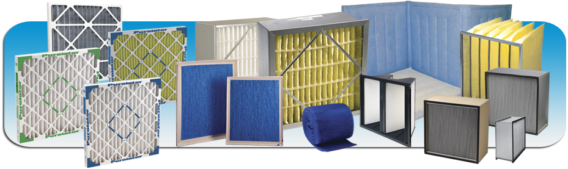

Air Filter
A particulate air filter is a device composed of fibrous or porous materials which removes solid particulates such as dust, pollen, mold, and bacteria from the air. Filters containing an adsorbent or catalyst such as charcoal (carbon) may also remove odors and gaseous pollutants such as volatile organic compounds or ozone.[1] Air filters are used in applications where air quality is important, notably in building ventilation systems and in engines.

Some buildings, as well as aircraft and other human-made environments (e.g., satellites and space shuttles) use foam, pleated paper, or spun fiberglass filter elements. Another method, air ionizers, use fibers or elements with a static electric charge, which attract dust particles. The air intakes of internal combustion engines and air compressors tend to use either paper, foam, or cotton filters. Oil bath filters have fallen out of favor. The technology of air intake filters of gas turbines has improved significantly in recent years, due to improvements in the aerodynamics and fluid dynamics of the air-compressor part of the gas turbines.